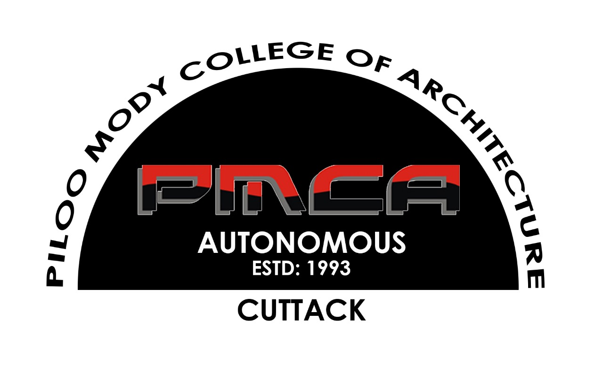

IGBC BHUBANESWAR
CHAPTERLAUNCH
CHAPTERLAUNCH

IGBC Students' Chaptera greener generation begins
Piloo Mody College of Architecture (PMCA), Cuttack
06
October 2026Launch of the chapter
"to inspire, instill and imbibe 'Green' approach for a sustainable tomorrow"
IN THE AUGUST PRESENCE OF
IGBC
PMCA
Ar. Manonjay RathChairman, IGBC Bhubaneswar Chapter
Ar. Dharitri DasPrincipal, PMCA
Ameet Vikram KothaariIGBC AP · Convenor, IGBC Green Education
Ar. Maitreyee MishraProfessor and Academic Head, PMCA
Shri Sidhesh Kumar MishraDeputy Director, IGBC
Ar. Shankar GiriAssociate Professor and Faculty Mentor,
IGBC Students' Chapter
IGBC Students' Chapter
LED BY STUDENTS
Students lead the chapter
Students of PMCA drive the IGBC Students' Chapter, conducting activities and knowledge sessions on green practices for sustainable architecture and construction, in sync with nature, round the year.
Green practice activities and knowledge sessions
Circular architecture from the education stage